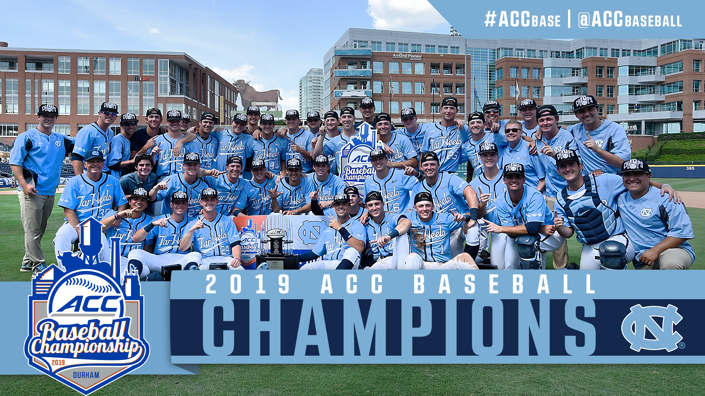

Sports
Favorite to Play
- Baseball
- Basketball
- Football
Favorite to Watch
- MLB Baseball
- NFL Football
- NCAA Basketball
- NHL Hockey
Favorite Teams
- Pittsburgh Steelers
- Pittsburgh Penguins
- Pittsburgh Pirates
- Boston Red Sox
- North Carolina Tar Heels
Favorite Players
- Shane Bieber: Cleveland Indians
- Walker Buehler: Los Angeles Dodgers
- David Ortiz: Boston Red Sox
- Sidney Crosby: Pittsburgh Penguins
- Troy Polamalu: Pittsburgh Steelers
- Michael Jordan: UNC Tar Heels and Chicago Bulls
Food
- Chicken Wings
- White Pizza
- Ravioli
- Mac 'n Cheese
- Vanilla Cheese
Travel and Places
- West Palm Beach, Florida
- Atlanta, Georgia
- Phoenix, Arizona
- Aguascalientes, Mexico
- Sterling Heights, Michigan
- Boston, Massachusetts
- Providence, Rhode Island
- Fort Myers, Florida
- Nashville, Tennessee
- Hilton Head, South Carolina
Ten books I would take to a deserted island
-
Any Harry Potter book by J.K. Rowling.
-
To Kill a Mockingbird by Harper Lee.
-
Fahrenheit 451 by Ray Bradberry.
-
Animal Farm by George Orwell.
-
The Hunger Games by Suzanne Collins.
-
The Great Gatsby by F. Scott Fitzgerald.
-
1984 by George Orwell.
-
The Catcher in the Rye by J.D. Salinger.
-
Lord of the Flies by William Golding.
-
Of Mice and Men by John Steinbeck.